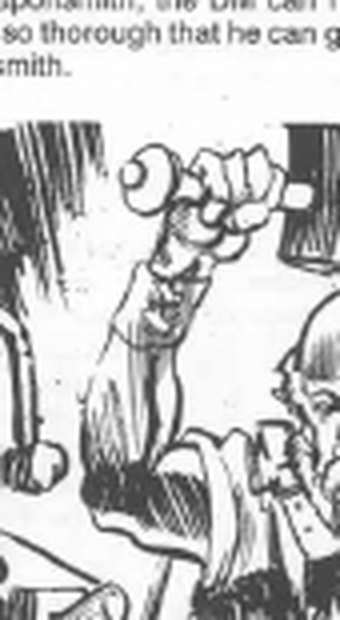
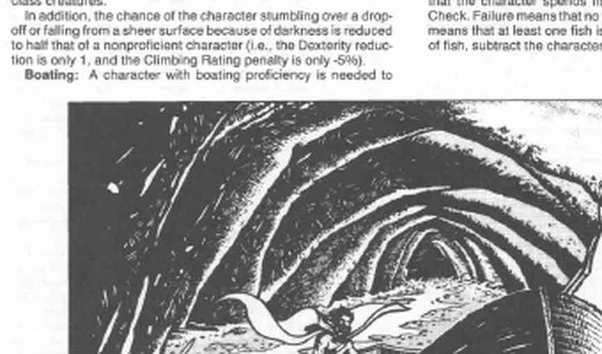
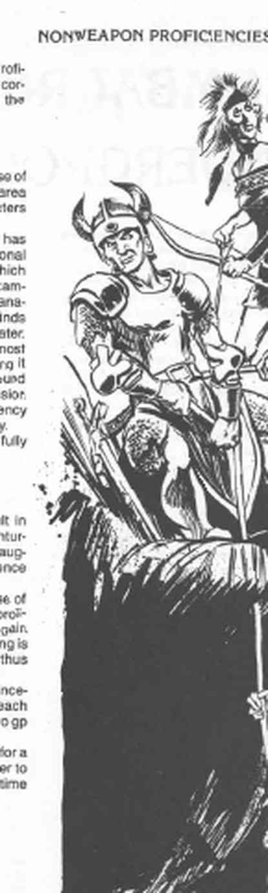

熟练项 · Proficiencies

本章把《东方冒险》中的非武器熟练项扩展为适合地下探险与生存的技能。规则为可选规则；若允许玩家使用，也应允许 NPC 使用，否则会破坏平衡。
熟练项栏位与检定
角色在 1 级获得若干熟练项栏位。依职业不同，其中一些必须用于武器训练，其余可用于非武器技能；未使用的栏位可保留，但已填入的栏位不能更改。角色可将新栏位用于提升已有熟练项，熟练项检定修正每增加一个栏位提高 2。
| 职业 | 1级武器/非武器栏位 | 新增频率（武器/非武器） |
|---|---|---|
| 骑士 | 3/2 | 每 2 级 1/1 |
| 圣武士 | 3/2 | 每 2 级 1/1 |
| 牧师 | 2/3 | 每 4 级 1/1 |
| 德鲁伊 | 2/3 | 每 5 级 1/1 |
| 战士 | 4/2 | 每 3 级 1/1 |
| 野蛮人 | 6/3 | 每 2 级 1/1 |
| 巡林客 | 3/2 | 每 3 级 1/1 |
| 魔法师 | 1/3 | 每 6 级 1/2 |
| 幻术师 | 1/3 | 每 6 级 1/2 |
| 盗贼 | 2/3 | 每 4 级 1/1 |
| 盗贼（杂技士） | 2/3 | 每 4 级 1/1 |
| 刺客 | 3/2 | 每 4 级 1/1 |
| 武僧 | 1/1 | 每 2 级 1/1 |
| 吟游诗人 | 按其他职业 | 每 4 级 1/1 |
职业表中的“每 N 级”包含第 1 级。例如“每 4 级 1/1”表示每获得四个等级，武器和非武器各增加一个栏位。0 级骑手和 0 级枪骑兵各拥有一个非武器熟练项。
通常熟练项检定与属性检定相同：掷 1d20，与指定属性比较；列出的修正加到骰值。结果为 3 或更低时，无论修正如何都失败。检定成功且用于评价工艺时，代表做工优良；掷出 20 则近乎完美，售价可达通常报价的 110%–200%。制作时间假定角色全天投入；狩猎、战斗等分心会延长时间。
副职业可用熟练项表示：每一或两个副职业花费一个栏位。冒险熟练项（攀爬、游泳、驾驶船只等）帮助应对地下环境；工匠熟练项（制武、冶炼、造船等）通常需要更多设备。学习熟练项必须有工具、材料和指导者。非战斗 NPC 经过学徒期后可获得两个非武器栏位；做一至四年学徒工后成为大师并得一个栏位，此后每四年再得一个。冒险职业者也可牺牲一个武器栏位换一个非武器栏位，但反之不可。地下城主可以根据背景、特殊材料或魔法物品给予额外修正。
检定、制作时间与学习条件
在正常条件下，大多数非武器熟练项的使用不会失败。例如，拥有全部工具、充足原料和时间的造船者，可以按合理规格造船；但若他被困在潮湿的地下洞穴中，只找到几段绳子和漂来的木头，想造一条简陋小船，就必须作熟练项检定。需要检定的情形包括：判断任务能否在给定限制内完成，以及评价成品的质量。熟练项检定完全按属性检定进行：掷 1d20，与该熟练项列出的属性比较，再加上熟练项修正。角色每用一个额外栏位强化某项熟练项，检定修正再提高 2。无论修正如何，结果为 3 或更低时，使用熟练项的尝试失败。
若检定用于判断工艺质量，成功表示做工优良；结果越好，完美程度越高，掷出 20 代表近乎无瑕的作品。出售这种成品时，所得价格可为通常报价的 110%–200%。书中列出的制作时间假定角色整天投入该熟练项；若中途需要狩猎、战斗或应付其他干扰，完成时间应相应延长。
本章熟练项分为冒险熟练项和工匠熟练项。前者提高角色应对地下环境的能力，例如攀爬、游泳和驾船；后者帮助角色为冒险作准备，通常需要更多设备和资源，例如武器匠、冶炼工和造船匠。它们也是东方冒险规则中艺术、实用和社会类非武器熟练项的扩展，并且完全属于可选规则；若允许玩家角色使用，也应允许非玩家角色获得，否则游戏平衡会受影响。
非武器熟练项还可以用来裁定《地下城主指南》第 12 页“副职业”表生成的副职业。角色若已有副职业，应允许用每一或两个副职业消耗一个熟练项栏位，将其转换为相应技能；没有对应熟练项的副职业仍按原副职业规则运作。
和平类熟练项可以在冒险之间的空档，甚至冒险过程中的空闲时段学习。学习唯一的必要条件是拥有工具，并且在首次学习时处于可以得到该行业专家训练和指导的环境中。例如，要有效学习造船，角色必须有水域、计划使用的木材、兽皮、芦苇或其他材料，以及一名熟练造船者在场并愿意协助。若角色已经掌握某项熟练项，适用的魔法物品才可能帮助他使用该熟练项；这类物品可以提高成功率，或提高成品、工作效果的质量。
工匠、工匠与可选修正 · NPC 与可选修正
熟练项栏位也会随着角色升级增加；新增栏位可以用来强化已有熟练项，而不是学习新项，每次使相应属性的检定修正提高 2。例如，矿工熟练项原本为 −1 时，再投入一个栏位即可变为 +1。那些不把大部分时间用于职业类能力、而是终身钻研和平技能的 NPC，通常比冒险者更精通非武器熟练项。没有武器熟练项的 NPC，在完成一段和平技能训练后，可以获得两个非武器熟练项栏位，这代表他已从学徒阶段进入该行业的熟练工阶段。
经过 1–4 年熟练工实践后，角色成为该职业的大师，并获得额外一个熟练项栏位；此后每工作四年再获得一个栏位。这样，经历数十年磨炼的非战斗工匠会逐渐变得极其熟练。拥有冒险职业的角色也可以用一个武器熟练项换取一个非武器熟练项；随着升级，他可以继续以一换一，但不能用非武器栏位换回武器栏位。
地下城主始终可以修改或扩充这些规则。例如，若制甲匠获得特别坚固的金属，地下城主可以允许他限量制作改良的非魔法 +1 或 +2 护甲；若角色背景明确写有少年时期曾向高明的武器匠学徒，地下城主也可以裁定训练足够彻底，使角色自动获得武器匠熟练项。
工匠熟练项
| 熟练项 | 栏位 | 属性 | 修正 |
|---|---|---|---|
| 动物训练 | 1* | 感知 | 0 |
| 制甲 | 2* | 智力 | −2 |
| 铁匠 | 1 | 力量 | 0 |
| 造船 | 1 | 智力 | −2 |
| 制弓/制箭 | 1* | 敏捷 | −1 |
| 木匠 | 1 | 力量 | 0 |
| 宝石切割 | 1 | 敏捷 | −2 |
| 皮革匠 | 1 | 智力 | 0 |
| 矿工 | 2* | 感知 | −3 |
| 陶工 | 1 | 敏捷 | −2 |
| 冶炼工 | 1 | 智力 | −2 |
| 石匠 | 1 | 力量 | −2 |
| 武器匠 | 3* | 智力 | −3 |
| 织工 | 1 | 智力 | −1 |
带星号的熟练项每次使用都要检定。
动物训练
获得此熟练项时指定一种动物（马、狗、鹰、鸽子、大象等）；额外栏位可提高该动物的检定修正，或增加另一种动物。训练典型用途需 3 个月，每名训练者同时最多训练 6 只，结束时检定获得 +10；高级训练再需 3 个月，同时最多 3 只，结束时逐只作无修正检定，成功才会执行战争、取物等高级任务。
制甲、铁匠与造船
制甲者可按正常材料和设施制作《玩家手册》及《Unearthed Arcana》中的护甲；工期为护甲等级低于 10 的每一级 2 周（盾牌 2 周，全身板甲 18 周）。检定失败但距成功不超过 4 时，得到外观正常但 AC 差一级的瑕疵护甲；近战自然掷出 19 或 20 会使其断裂，AC 再差四级（最低不超过 10），移动减半、攻击 −4，拆除需 1d4 轮。制作带板甲或全身板甲时，使用者每周至少试穿一次。
铁匠需煤炉、风箱、锤和砧，可制造撬棍、抓钩、马蹄铁、钉子、铰链、犁等铁制品，也能制作无锋无尖的锤、钉头锤等武器，但不能制作大多数护甲和武器。
造船可制作最长 60 英尺的船只。通常每英尺船长需一周；两名熟练造船者把时间减半，三名减至三分之一，同时作业人数上限为每 5 英尺 1 人。船体、桅杆、甲板和长凳为基本配置，船舱或密封货舱各增加约一周；两个非熟练帮工才等同于一个熟练造船者的效率。
制弓/制箭与武器匠
制弓者可制作《玩家手册》武器表中的弓和箭；箭头需武器匠制作。长弓或短弓工期一周，复合弓两周，每天可制 1d6 支箭。完成后作熟练项检定；成功意味着武器质量优良，可经受多年的正常使用；失败时武器仍可使用，但寿命有限：箭在第一次射击时断裂，弓在持用者攻击骰未修正掷出 1 时断裂。若采用高品质选项，失败即废品，成功则非魔法武器在攻击与伤害中均获得 +1；熟练项检定掷出自然 20 时，武器攻击再获得 +1。
武器匠制作金属武器，尤其是刃器。参考武器的工期和材料费：匕首 5 天、重弩 20 天、长剑 30 天、双手剑 45 天；完成后作熟练项检定，失败的武器在持用者攻击未修正掷出 1 时损坏。高品质选项中，成功的非魔法武器每次命中额外造成 +1 伤害；自然 20 时攻击也获得 +1。
| 武器 | 制作时间 | 材料费 |
|---|---|---|
| 箭头 | 每日 1–2 枚 | 1 cp |
| 战斧 | 10 天 | 10 sp |
| 手斧 | 5 天 | 5 sp |
| 匕首 | 5 天 | 2 sp |
| 重弩 | 20 天 | 10 sp |
| 轻弩 | 15 天 | 5 sp |
| 叉、三叉戟 | 20 天 | 10 sp |
| 矛、骑枪 | 4 天 | 4 sp |
| 短剑 | 20 天 | 5 sp |
| 长剑 | 30 天 | 10 sp |
| 双手剑 | 45 天 | 2 gp |
未列出的武器，可参照表中相近武器估算制作时间与材料费。
其余工匠
木匠一周可建造一个 10 英尺立方体大小的木结构；七人中只需一名木匠即可一天完成，比例为每九名非木匠配一名木匠。宝石匠每天加工 1d10 颗原石，需要良好光源、凿子、小锤和硬化刀片，非熟练帮工无助益。皮革匠可鞣皮并制作皮甲、背包、马鞍囊、鞍具和衣物。矿工负责寻找矿址并监督采矿。陶工需陶轮、窑、黏土和釉料，每天可制两件小/中型或一件大型器皿，再窑烧一天；材料费分别为 3 cp、5 cp、1 sp。冶炼工在高温炉中以水、酸等分离矿石与金属；小、中、大冶炼炉分别可处理 4、20、100 名矿工的产量，每日运行费为 5、12、25 gp。石匠每天可砌一段厚 1 英尺、长 10 英尺、高 5 英尺的墙。织工用纺锤和织机每天织两平方码布料。
冒险熟练项

| 熟练项 | 栏位 | 属性 | 修正 |
|---|---|---|---|
| 动物叫声 | 1 | 感知 | −1 |
| 盲斗 | 1 | — | — |
| 驾船 | 1 | 感知 | +1 |
| 方向感 | 1* | 感知 | +1 |
| 耐力 | 2 | — | — |
| 生火 | 1 | 感知 | −1 |
| 钓鱼 | 1* | 感知 | −1 |
| 真菌辨识 | 1 | 智力 | +6 |
| 治疗 | 2* | 感知 | +2 |
| 登山 | 1 | — | — |
| 骑术 | 1 | 感知 | +3 |
| 绳技 | 1 | 敏捷 | 0 |
| 缓慢呼吸 | 1 | — | — |
| 声音分析 | 1 | 感知 | −1 |
| 游泳 | 1 | 力量 | 0 |
表中“—”表示使用时不需检定。
动物叫声： 成功时只有魔法才能分辨仿声；失败不代表听者一定识破，熟悉该动物的生物自动察觉，其他听者可作感知检定。
盲斗： 训练者在黑暗、蒙眼或失明时，攻击、伤害和豁免只受 −2，黑暗不再提高 AC，也保留背刺、对巨人加伤等通常依赖视觉的能力。因黑暗跌落的几率减半：敏捷减值只算 −1，攀爬评级减值只算 −5%。
驾船： 可驾驶船只通过急流、降低独木舟或皮艇倾覆风险，并使船保持最大速度；具体规则见地下水道章节。
方向感： 集中 1d6 轮后由地下城主秘密检定。成功得到正确方向；失败但掷出大于 1 时偏离左右最多 90°；掷出 1 时得到正相反方向。
耐力： 角色在疲劳和衰竭前可持续活动的时间加倍。
生火： 有干木和引火物时，2d20 分钟内无需火绒盒、燧石和钢即可生火；湿木、大风等恶劣条件需 3d20 分钟并作检定。
钓鱼： 每钓一小时检定一次；成功至少钓到一条，鱼数等于感知减 d20 结果。每条鱼可供一名角色获得半日口粮；没有鱼的水域不能钓到。
真菌辨识： 地下约一半真菌有毒。光线充足并研究一轮时无需检定；看不清或必须立即决定能否食用时才检定。
治疗： 受伤后一轮内处理并检定成功，恢复 1d3 点生命；持续照料时每天恢复 1 点，完全休息者每天恢复 2 点。可立即处理毒蛇咬伤或毒刃中毒，使毒豁免获得 +2；患者须静止一轮，治疗者连续照料五个近战轮，期间移动或被打断则重新作无修正毒豁免。
登山： 能使用打入岩石的岩钉；每投入一个栏位，攀爬评级 +10%。
骑术： 获得时选择一种坐骑。静止坐骑上马无需检定；在同一时段让坐骑移动、骑上移动中的坐骑、跳跃、加速、受伤后保持坐骑、骑乘双手武器或跃下攻击，都按具体动作检定。坐骑可跳过 3 英尺高或 12 英尺宽的障碍而无需检定；成功检定可跳至 7 英尺高或 30 英尺宽。加速每轮使速度 +6 英尺，最多四轮；导引坐骑用膝盖可用双手武器，受伤时失败会坠落并额外 1d6；侧挂在坐骑旁时 AC +6，但不能攻击或穿甲；跃下攻击 10 英尺内目标时检定 −4，失败受 1d3。
绳技： 熟悉各种可滑脱、固定、缓降或一拉即松的绳结；被绳绑住时以 −6 检定逃脱。套索攻击 +2，使用绳子攀爬（包括保护同伴）评级 +10%。
缓慢呼吸： 坐下或躺下集中一轮进入深度恍惚，呼吸耗氧率降至休息时的 10%；可随时恢复，期间仍能察觉周围动静。
声音分析： 在绝对安静处发出短促声音，通过回声估算地下空间，最远一英里并可判断声音方向。成功时长度误差 ±30%，宽度和高度误差 ±25%；失败后本人不能再次分析同一区域。掷出 5 或更低还能知道岔道数量、空间是否弯曲、是否有水体等额外信息，但声音会暴露队伍位置。

游泳熟练项详见《游泳》规则。
熟练项与经验值
玩家角色使用非武器熟练项不会获得经验值，因为这些技能服务于冒险。靠熟练项谋生的 NPC 可用收入获得经验：每赚取净收入 2 gp 得 1 XP，每次升级获得 1d4 生命值，升级间隔按战士经验表处理。地下城主也可以直接随时间提高 NPC 的熟练项，而不记录每笔收入。